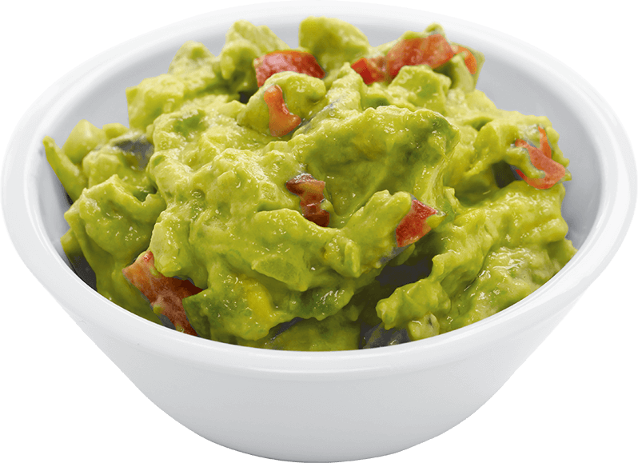

Guacamole

Description
Guacamole is a creamy, flavorful dip made from ripe avocados, often seasoned with ingredients like lime juice, garlic, and cilantro.
Originating from Mexico, this versatile dish has deep roots in Aztec cuisine, where avocados were a staple.
Ingredients
- 3 ripe avocados
- 1 finely chopped small onion
- 1-2 minced cloves of garlic
- 1-2 diced tomatoes
- 1 juiced lime
- 1/4 cup of chopped, fresh cilantro
- 2g of salt
- (Optional) 1 finely chopped and seeded small jalapeño
Steps
- Prepare the Avocados: Cut the avocados in half, remove the pits, and scoop the flesh into a mixing bowl.
- Mash the Avocado: Use a fork or a potato masher to mash the avocados to your desired consistency (smooth or chunky).
- Mix Ingredients: Add the finely chopped onion, minced garlic, diced tomatoes, lime juice, and chopped cilantro to the bowl.
- Season: Add salt to taste, and if using, mix in the finely chopped jalapeño for extra heat.
- Combine: Gently stir all the ingredients until well combined. Adjust seasoning as needed.
- Serve: Transfer the guacamole to a serving bowl and enjoy with tortilla chips, as a topping for tacos, or alongside any of your favorite Mexican dishes.
Check our other recipes
Carbonara
Scrambled aggs
Back to home page